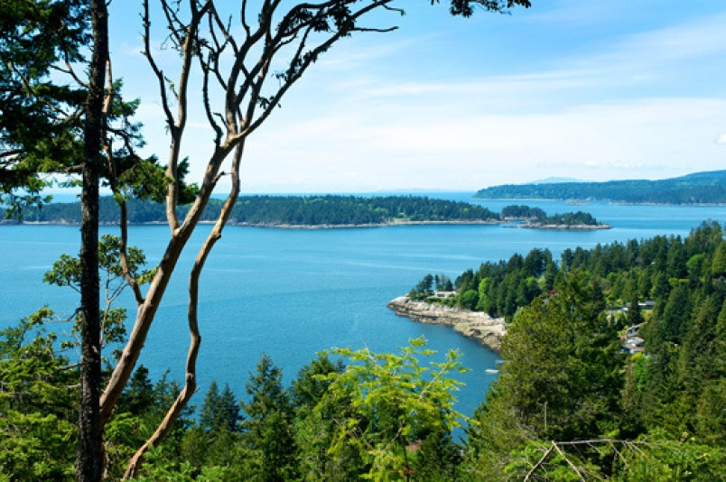
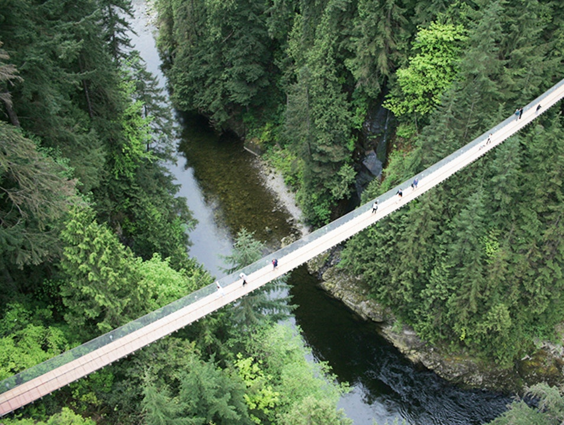
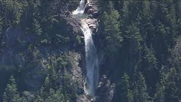

Bowen Islands
A 20 minute ferry ride from the Horseshoe Bay ferry terminal,Bowen Island is a beautiful residential island in the middle of Howe Sound. An ideal kayaking destination, it also makes a great day trip from Vancouver for those looking for a quiet escape from the city. beautiful and scenic island.We drove around the island and lost ourselves in the beauty of its own crystal clear beaches. Having lunch by the lakeside in the quiet and calm lake was great experience that i would love to do a million times.
Capilano Suspension Bridge Park
Capilano Suspension Bridge crosses to towering evergreens, cedar-scented rainforest air and Treetops Adventure, 7 suspended footbridges offering views 110 feet above the forest floor. First i was not quite sure whether I would be able to cross the bridge seeing its height that was not quite normal. But with the motto of "I Can Do This" attitude, I gained courage to start walking over the bridge. What a terrifying experience of my lifetime. Thinking of the experience itself makes me nervous. Ha Ha... but when I completed crossing the bridge , there came a huge relief and an immense sense of calm from my fear of the height for sometime. Little did i know that there were couple of other suspension bridges inside the park. But truely it was a memorable experience when i look back into.
Whistler
The Peak 2 Peak Gondola is a tricable gondola lift at Whistler, British Columbia, linking Whistler Mountain's Roundhouse Lodge with Blackcomb Mountain's Rendezvous Lodge. It is the first lift to join the two side-by-side mountains

Shannon Falls
Shannon Falls Provincial Park is a provincial park in British Columbia, Canada. It is located 58 kilometers from Vancouver and 2 kilometers south of Squamish along the Sea to Sky Highway. The park covers an area of 87 hectares.
